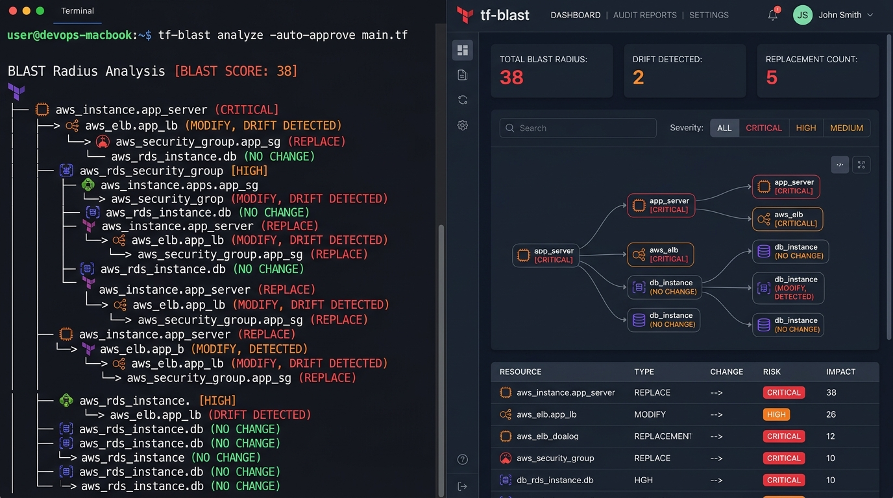

Instant, dependency-aware blast radius and risk intelligence for Terraform and OpenTofu plans. Detect cascading outages, disruptive replacements, and state drift before applying.

Traditional tools stop at resource counts. tf-blast maps the Directed Acyclic Graph (DAG) to expose cascading impacts and protect production.
Builds a comprehensive dependency graph merging direct references, state dependencies, and implicit linkages. Reveals how a single subnet change cascades across 20+ services.
Replaces arbitrary gut checks with mathematical risk scores based on severity (Critical: 25, High: 15), destructive actions (+5), cascading radius (+2), and out-of-band drift (+3).
Generates fully self-contained HTML audit reports with zero external CDN dependencies, light/dark themes, instant client-side search, severity filters, and cascading impact trees.
Compare two plan runs using tf-blast diff. Pinpoint whether your refactoring resolved existing blast radius risks or inadvertently introduced new destructive changes.
Analyze multiple module plans in a single execution. Aggregates dependencies across root modules to detect cross-stack breaking changes and unified risk scores.
100% local execution. Zero network calls, zero telemetry, zero analytics. Sensitive passwords, tokens, and private keys in Terraform plans are automatically redacted.
Start analyzing blast radii in four straightforward steps.
tf-blast operates on standard Terraform or OpenTofu plan JSON exports:
# Create binary execution plan
terraform plan -out=tfplan.binary
# Export to standard JSON
terraform show -json tfplan.binary > tfplan.jsonExecute tf-blast directly against the JSON plan:
# Terminal output with color-coded risk paths
tf-blast analyze tfplan.jsonExport a full visual report for architectural reviews or compliance audits:
tf-blast analyze --output html --out-file report.html tfplan.json
open report.htmlFail your CI pipeline if dangerous modifications or blast thresholds are exceeded:
# Block merge on critical resources, replacements, or score > 50
tf-blast analyze --fail-on critical,replace --max-score 50 tfplan.jsonFull reference for command syntax, flags, piping, and differential comparison.
| Command | Description | Example |
|---|---|---|
tf-blast analyze [flags] <plan.json...> |
Analyze one or more Terraform plan JSON files or piped stdin. | tf-blast analyze tfplan.json |
tf-blast diff [flags] <before.json> <after.json> |
Compare two plan snapshots to calculate resolved and newly introduced blast risks. | tf-blast diff plan_old.json plan_new.json |
tf-blast completion [bash|zsh|fish] |
Generate shell autocompletion script. | source <(tf-blast completion zsh) |
tf-blast version |
Display the installed binary version and build metadata. | tf-blast version |
| Flag | Type | Default | Description |
|---|---|---|---|
--output, -o |
string | terminal |
Output format: terminal, markdown, html, json, mermaid, sarif. |
--out-file |
string | "" |
File path to write report output to (e.g. report.html, blast.sarif). |
--fail-on |
string | "" |
Comma-separated violation thresholds to exit 1: critical, high, medium, replace, delete. |
--max-blast |
int | 0 |
Maximum allowed blast radius count. If total blast exceeds this, exits with code 1. |
--max-score |
int | 0 |
Maximum allowed weighted blast score. If total score exceeds this, exits with code 1. |
--silent, -s |
bool | false |
Suppress stdout; exit 1 on policy violation (ideal for silent CI gates). |
--config, -c |
string | "" |
Path to custom policy configuration file (auto-detects .tf-blast.yaml). |
--redact-sensitive |
bool | true |
Automatically sanitize and redact passwords, private keys, and tokens from plan output. |
Stream JSON plans directly from Terraform without writing intermediate unencrypted files to disk:
terraform show -json tfplan.binary | tf-blast analyze -Quantify risk changes between iterations of a pull request:
# Compare baseline plan against refactored plan
tf-blast diff plan_before.json plan_after.json
# Export diff as machine-readable JSON
tf-blast diff --output json plan_before.json plan_after.json > diff.jsonRun tf-blast in clean, isolated environments without installing Go or local binaries. Multi-arch images (linux/amd64 and linux/arm64) are hosted on GitHub Container Registry (GHCR).
docker pull ghcr.io/smford/tf-blast:latestMount your current workspace directory into /workspace inside the container:
docker run --rm \
-v "$(pwd):/workspace" \
-w /workspace \
ghcr.io/smford/tf-blast:latest \
analyze tfplan.jsonPipe Terraform plan JSON straight through standard input without saving files:
terraform show -json tfplan.binary | docker run -i --rm ghcr.io/smford/tf-blast:latest analyze -Output standalone HTML reports or OASIS SARIF files directly to your host directory:
docker run --rm \
-v "$(pwd):/workspace" \
-w /workspace \
ghcr.io/smford/tf-blast:latest \
analyze --output html --out-file /workspace/report.html tfplan.jsonAll official tf-blast container images are cryptographically signed using Sigstore Cosign with GitHub OIDC keyless signing:
cosign verify ghcr.io/smford/tf-blast:latest \
--certificate-identity-regexp="https://github.com/smford/tf-blast/.github/workflows/release.yml@" \
--certificate-oidc-issuer="https://token.actions.githubusercontent.com"Embed blast radius guardrails into your pull request workflows. Uses pre-compiled binaries for sub-second execution with graceful fallback.
smford/tf-blast@v1 action automatically fetches optimized binaries for the runner architecture from GitHub Releases, completing in under 1 second.
Automatically post an expandable blast radius report directly to the pull request:
name: "Terraform Blast Analysis"
on:
pull_request:
branches: [main]
permissions:
pull-requests: write
contents: read
jobs:
blast:
runs-on: ubuntu-latest
steps:
- name: Checkout
uses: actions/checkout@v4
- name: Setup Terraform
uses: hashicorp/setup-terraform@v3
- name: Terraform Plan
run: |
terraform init
terraform plan -out=tfplan.binary
terraform show -json tfplan.binary > tfplan.json
- name: Analyze Blast Radius
uses: smford/tf-blast@v1
with:
plan-file: "tfplan.json"
post-comment: "true"
github-token: ${{ secrets.GITHUB_TOKEN }}Block merging pull requests that destroy stateful databases, trigger replacements, or exceed score thresholds:
- name: Enforce Blast Gate
uses: smford/tf-blast@v1
with:
plan-file: "tfplan.json"
fail-on: "critical,replace"
max-score: 50
post-comment: "true"
github-token: ${{ secrets.GITHUB_TOKEN }}Upload findings directly into GitHub Security Code Scanning to highlight breaking lines in the pull request diff:
permissions:
security-events: write
contents: read
steps:
- name: Analyze & Export SARIF
uses: smford/tf-blast@v1
with:
plan-file: "tfplan.json"
sarif: "true"
sarif-file: "tf-blast.sarif"
- name: Upload to GitHub Code Scanning
uses: github/codeql-action/upload-sarif@v3
if: always()
with:
sarif_file: "tf-blast.sarif"
category: "tf-blast"| Input | Required | Default | Description |
|---|---|---|---|
plan-file |
Yes | "tfplan.json" |
Path to Terraform JSON plan file (or multiple space-separated files). |
fail-on |
No | "" |
Violation thresholds (e.g. critical, replace, high). |
max-blast |
No | 0 |
Maximum allowed blast radius count before exiting with failure. |
max-score |
No | 0 |
Maximum allowed weighted blast score before exiting with failure. |
post-comment |
No | "false" |
Post or update a sticky Markdown summary on the PR. |
comment-tag |
No | "tf-blast-report" |
Unique identifier tag to update existing PR comments cleanly. |
sarif |
No | "false" |
Generate an OASIS SARIF report for GitHub Code Scanning. |
github-token |
No | ${{ github.token }} |
GitHub token for commenting and release binary fetching. |
tf-blast renders risk data for developers, security teams, and automated CI pipelines.
================================================================================
TF-BLAST: TERRAFORM BLAST RADIUS ANALYSIS
================================================================================
PLAN HEALTH: MODERATE BLAST RADIUS DETECTED (Risk Score: 38)
RESOURCES TO CHANGE: 3 (1 delete, 1 replace, 1 update)
DOWNSTREAM BLAST RADIUS: 4 dependent resources affected
SUMMARY METRICS:
+ Total Blast Radius: 7
+ Blast Score: 38
+ Critical: 1 | High: 2 | Medium: 1 | Low: 3
+ Stateful Deletions: 1
+ Disruptive Replacements: 1
+ Out-of-Band Drift Detected: 1
CASCADING BLAST IMPACT:
[CRITICAL] aws_db_instance.primary (replace, risk score: 32)
--> Drift detected: engine_version changed out-of-band
+-- [HIGH] aws_route53_record.db (modify)
+-- [HIGH] aws_ecs_service.api (modify)
| +-- [LOW] aws_appautoscaling_target.api (no-op)
+-- [MEDIUM] aws_cloudwatch_metric_alarm.db (modify)
Customize risk classifications, blast radius scoring rules, and CI gates via .tf-blast.yaml with full IDE auto-completion.
# yaml-language-server: $schema=https://raw.githubusercontent.com/smford/tf-blast/main/schema/tf-blast.schema.json
$schema: "https://raw.githubusercontent.com/smford/tf-blast/main/schema/tf-blast.schema.json"
# CI policy threshold enforcement
fail_on: "critical"
max_blast: 15
max_score: 50
# Custom severity categorization rules (overrides default heuristic tiers)
rules:
critical:
- "*rds*"
- "*database*"
- "*dynamodb*"
- "*s3_bucket*"
- "*persistent_volume*"
- "*blob*"
high:
- "*security_group*"
- "*route_table*"
- "*iam_role*"
- "*firewall*"
- "*policy*"
medium:
- "*instance*"
- "*ecs_service*"
- "*alb*"
- "*kubernetes_deployment*"
low:
- "*tag*"
- "*log_group*"
- "*alert*"
# Exclude specific resource addresses or types from blast counting
ignore_resources:
- "*null_resource*"
- "*random_id*"
- "*time_sleep*"Download pre-compiled, self-contained binaries for Linux, macOS, and Windows.
Released: Sep 20, 2026